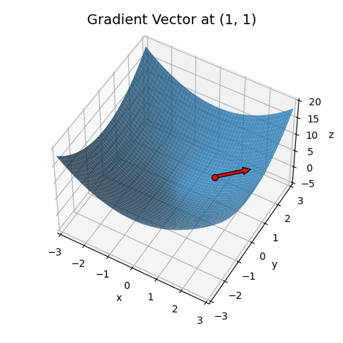
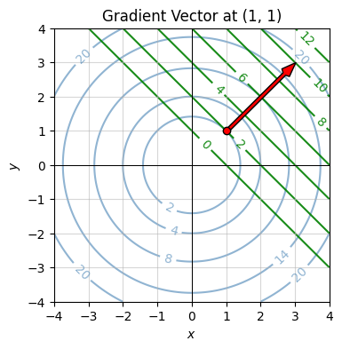
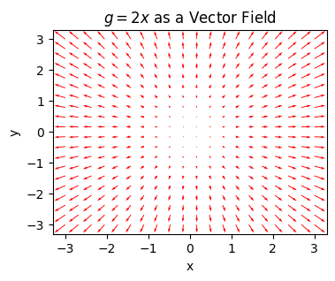
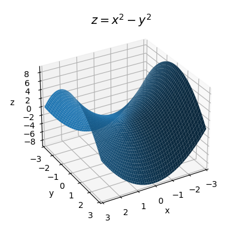

Code
import numpy as np
import sympy as sp
import matplotlib.pyplot as plt
from utils.math_ml import *In this lesson I’ll finally go back to calculus after a long detour into linear algebra. I’ll talk about the calculus of multivariate functions. While it may seem odd to do so much linear algebra in between the calculus lessons, there’s a good reason for it. In some sense multivariate calculus is a marriage of both ordinary univariate calculus and linear algebra. Let’s get started.
import numpy as np
import sympy as sp
import matplotlib.pyplot as plt
from utils.math_ml import *In univariate calculus we were interested in functions of the form \(y=f(x)\), where \(y\) is a single output that depends continuously on a single input \(x\). We can extend differentiation to higher dimensions as well. To keep things simple, let’s start with bivariate functions of the form \(z = f(x,y)\). The output \(z\) will now depend continuously on two input variables \(x\) and \(y\).
Recall the graph of a bivariate function is a two-dimensional surface. For example, here’s a plot of the function
\[z = x^2 + y^2.\]
The graph of this function is an upward-facing bowl centered at the origin \((0,0,0)\).
x = np.linspace(-10, 10, 100)
y = np.linspace(-10, 10, 100)
f = lambda x, y: x**2 + y**2
plot_function_3d(x, y, f, title='$z=x^2+y^2$', titlepad=10, labelpad=5, ticks_every=[4, 4, 50], dist=12,
figsize=(6, 5))
Suppose we have some bivariate function \(z=f(x,y)\). We ultimately want to figure out how does a small change in both inputs create small changes in the output. It’s simpler to start with the case where we only change one input at a time, while imagining the other one is constant.
Let’s start by pretending \(y\) is constant and only \(x\) is allowed to vary. Then for all practical purposes \(z\) is a function of \(x\) alone. To make this easier to visualize I’ll write \(z = f(x, \begingroup\color{red}y\endgroup)\) to represent this idea. Variables in black will be allowed to vary, and variables in red are assumed to be held constant.
Let me also go ahead and introduce the notion of a partial differential. In situations where we’re only varying one input variable while holding the rest fixed, it’s common to use a special notation for the differentials. Instead of writing \(dz\) for the differential of \(z\), we’d write \(\partial z\) (pronounced “partial z”) to make it clear we’re only varying one input. If the input we’re varying is \(x\), we might write \(\partial_x z\) to make this extra clear. If we’re varying \(y\), we’d write \(\partial_y z\). Since the input differentials \(dx\) and \(dy\) don’t depend on anything we can denote them either way. That is, \(\partial x = dx\) and \(\partial y = dy\).
Now, suppose we change \(x\) by some infinitesimal amount \(\partial x\). Then \(z\) will change by an amount
\[\partial_x z = f(x + \partial x, \begingroup\color{red}y\endgroup) - f(x, \begingroup\color{red}y\endgroup).\]
Remember, \(z=f(x, \color{red}{y})\) is a univariate function of \(x\) alone. As long as you’ve got that clear in your mind, it’s okay to write the function as \(z=f(x, y)\) and mentally remember \(y\) is fixed. Dividing both sides by \(\partial x\) gives some kind of derivative, which we call the partial derivative with respect to \(x\),
\[\frac{\partial z}{\partial x} = \frac{f(x+\partial x, \color{red}{y}) - f(x, \color{red}{y})}{\partial x}.\]
When writing the partial derivative, we tend to lazily write \(\partial z\) instead of \(\partial_x z\) since the denominator makes it clear what we’re varying. Just as with the ordinary derivative, the partial derivative says how much the output will vary in response to small changes in the input, except with the caveat that we’re only varying \(x\) and keeping \(y\) fixed.
We can of course do exactly the same thing with the variables reversed, varying \(y\) and fixing \(x\). In that case, we’d have \(z = f(\begingroup\color{red}x\endgroup, y)\). If we change \(y\) by an infinitesimal amount \(\partial y\), then \(z\) changes by an amount
\[\partial_y z = f(\begingroup\color{red}x\endgroup, y + \partial y) - f(\begingroup\color{red}x\endgroup, y).\]
Dividing everything by \(\partial y\) gives the partial derivative with respect to \(y\),
\[\frac{\partial z}{\partial y} = \frac{f(\begingroup\color{red}x\endgroup, y + \partial y) - f(\begingroup\color{red}x\endgroup, y)}{\partial y}.\]
The partial derivative with respect to \(y\) says how much \(z\) will change in response to small changes in \(y\) alone, at a given fixed value of \(x\).
It’s a good idea to go ahead and do a couple of examples. Despite all the weird notation floating around, calculating partial derivatives symbolically isn’t hard. All you do is differentiate the function with respect to the given variable while pretending the other one is a constant. Since it’s just univariate differentiation, all the differentiation rules we learned before carry over as is.
As a simple example, take the function I plotted above, \(z = x^2 + y^2\). In that case, if we treat \(y\) as constant and vary \(x\), then the partial differential of \(z\) is
\[\partial_x z = f(x + \partial x, \begingroup\color{red}y\endgroup) - f(x, \begingroup\color{red}y\endgroup) = \big((x + \partial x)^2 + \begingroup\color{red}{y^2}\endgroup \big) - \big(x^2 + \begingroup\color{red}{y^2}\endgroup\big) \approx 2x \partial x,\]
Dividing both sides by \(\partial x\) we get the partial derivative with respect to \(x\),
\[\frac{\partial z}{\partial x} = 2x.\]
Similarly, if we vary \(y\) and hold \(x\) fixed, the partial differential of \(z\) is
\[\partial_y z = f(\begingroup\color{red}x\endgroup, y + \partial y) - f(\begingroup\color{red}x\endgroup, y) = \big(\begingroup\color{red}{x^2}\endgroup + (y + \partial y)^2 \big) - \big(\begingroup\color{red}{x^2}\endgroup + y^2\big) \approx 2y \partial y.\]
Dividing both sides by \(\partial y\), we get the partial derivative with respect to \(y\),
\[\frac{\partial z}{\partial y} = 2y.\]
To take a more complicated example, suppose we had the function
\[z = e^x \sin 5y - \frac{4y}{x}.\]
Using the differential rules directly, the partial differentials turn out to be
\[ \partial_x z = \bigg(e^x \sin 5y + \frac{4y}{x^2}\bigg) \partial x, \quad \partial_y z = \bigg(5e^x \cos 5y - \frac{4}{x}\bigg) \partial y. \]
Dividing both sides by \(\partial x\) and \(\partial y\) respectively, the partial derivatives are then
\[ \frac{\partial z}{\partial x} = e^x \sin 5y + \frac{4y}{x^2}, \quad \frac{\partial z}{\partial y} = 5e^x \cos 5y - \frac{4}{x}. \]
We can calculate partial derivatives in sympy the same way we did ordinary derivatives. The only difference is we need to define two input symbols, and we need to be careful which one we differentiate the function with respect to. Here’s a sympy calculation of the partial derivatives from the previous example.
x, y = sp.symbols('x y')
z = sp.exp(x) * sp.sin(5 * y) - 4 * y / x
dzdx = z.diff(x)
dzdy = z.diff(y)
print(f'z = {z}')
print(f'∂z/∂x = {dzdx}')
print(f'∂z/∂y = {dzdy}')z = exp(x)*sin(5*y) - 4*y/x
∂z/∂x = exp(x)*sin(5*y) + 4*y/x**2
∂z/∂y = 5*exp(x)*cos(5*y) - 4/xWe can calculate partial derivatives numerically just like we could ordinary derivatives. The exact same caveats apply. We’d want to choose \(\partial x\) and \(\partial y\) to be small, but not too small to avoid numerical roundoff. Below I’ll define two functions diff_x(f, x, y, dx) and diff_y(f, x, y, dy) to calculate the \(x\) and \(y\) partials respectively.
As an example, I’ll numerically differentiate the function \(z=x^2+y^2\) at the point \((1,1)\). In this case, both partial derivatives should be exactly \(2\). If dx and dy are both 1e-5, the numerical estimate should agree with the exact answer to within an error of 1e-5.
def diff_x(f, x, y, dx=1e-5):
dz = f(x + dx, y) - f(x, y)
return dz / dx
def diff_y(f, x, y, dy=1e-5):
dz = f(x, y + dy) - f(x, y)
return dz / dy
f = lambda x, y: x**2 + y**2
x, y = (1, 1)
print(f'∂z/∂x = {diff_x(f, x, y)}')
print(f'∂z/∂y = {diff_y(f, x, y)}')∂z/∂x = 2.00001000001393
∂z/∂y = 2.00001000001393As in the univariate case, a bivariate function needs to satisfy certain conditions in order to be differentiable. First, it needs to be continuous. We’d say a bivariate function \(z=f(x,y)\) is continuous at a point \((a,b)\) if, whenever \(x\) is infinitesimally close to \(a\) and \(y\) is infinitesimally close to \(b\), the output \(z=f(x,y)\) is infinitesimally close to \(f(a,b)\). Informally, this just says if \(x \approx a\) and \(y \approx b\), then \(z \approx f(a,b)\). The function itself is called continuous if it’s continuous at every possible point \((a,b)\) in the plane. This is just the bivariate way of saying the function’s graph can’t have any jumps or sudden breaks in it anywhere.
To be differentiable, the quotients forming both partial derivatives need to be well-defined. Graphically this just says the function’s graph also can’t any sharp kinks in it in either the \(x\) direction or the \(y\) direction.
As in the univariate case, just about all the bivariate functions we’re interested in are continuous and differentiable, including sums, powers, products, exponents, logarithms, trig functions, and quotients. Here are a few examples of continuous and differentiable bivariate functions:
The partial differentials only say how much the output changes in response to one variable changing. What if both variables are allowed to change? Suppose again we have a function \(z=f(x,y)\), but this time we change both \(x\) by \(dx\) and \(y\) by \(dy\). The total amount \(z\) would change evidently must be
\[dz = f(x+dx, y+dy) - f(x, y).\]
Since we’re allowing both inputs to vary now we can use the regular \(dz\) notation for the differential. We’d call \(dz\) the total differential of \(z\).
Let’s take a quick example. Take again the quadratic function \(z=x^2 + y^2\). If we follow the above rule, then we’d have
\[dz = f(x+dx, y+dy) - f(x, y) = \big((x + dx)^2 + (y + dy)^2\big) - \big(x^2 + y^2\big) = 2xdx + 2ydy + dx^2 + 2dxdy + dy^2.\]
If we assume \(dx\) and \(dy\) are both infinitesimal then we can neglect the quadratic terms, in which case we’d get
\[dz = 2xdx + 2ydy.\]
Notice something interesting. The term containing \(dx\) is just the partial differential \(\partial_x z\), and the term containing \(dy\) is just the partial differential \(\partial_y z\),
\[dz = \partial_x z + \partial_y z.\]
We can write the same thing in terms of the partial derivatives too,
\[dz = \frac{\partial z}{\partial x}dx + \frac{\partial z}{\partial y}dy.\]
It turns out this fact is true for any differentiable function \(z=f(x,y)\). To see why, notice that by adding and subtracting \(f(x+dx, y)\) to \(dz\), we’d have
\[dz = f(x+dx, y+dy) - f(x, y) = \big(f(x+dx, y+dy) - f(x+dx, y) \big) + \big(f(x+dx, y) - f(x,y) \big).\]
We can think of this differential as a sum of two pieces. The second piece is just the partial differential \(\partial_x z\) at the point \((x,y)\). The first piece is just the partial differential \(\partial_y z\) at the point \((x+dx,y)\), but since \(dx\) is infinitesimal this will be approximately the partial differential at \((x,y)\) too. That is, we can always write the total differential \(dz\) in the form
\[dz = \partial_x z + \partial_y z = \frac{\partial z}{\partial x}dx + \frac{\partial z}{\partial y}dy.\]
Evidently, we can think of an arbitrary small change in \(z\) as being composed of two independent terms: One term that says how much \(z\) will change in response to only \(x\) varying, and another term that says how much \(z\) will change in response to only \(y\) varying. This is why I covered partial differentials first. We can build any total differential out of a sum of partial differentials. They’re in some sense a basis in the linear algebraic sense.
Let’s now try to get a visual understanding what these terms mean. Recall in the univariate case that we used the formula \(dy = \frac{dy}{dx} dx\) to get a formula for the tangent line to the function \(y=f(x)\) at the point \(x=a\),
\[f(x) \approx f(a) + \frac{d}{dx} f(a) \cdot (x-a).\]
The tangent line was the best approximation of the function \(y=f(x)\) near the point \(x=a\), and the slope of the tangent line was just the derivative taken at the point \(a\). We can do a similar thing in the bivariate case.
Suppose we’re interested in approximating the function \(z=f(x,y)\) around some point \((a,b)\). Provided \(x\) is close to \(a\) and \(y\) is close to \(b\), we can use the total differential formula to write
\[f(x,y) \approx f(a,b) + \frac{\partial}{\partial x}f(a,b) \cdot (x-a) + \frac{\partial}{\partial x}f(a,b) \cdot (y-b).\]
Since the partial derivative terms \(\frac{\partial}{\partial x}f(a,b)\) and \(\frac{\partial}{\partial y}f(a,b)\) are just constants that depend only on \(a\) and \(b\), what we’re looking at is the formula for a plane. It’s called the tangent plane. The tangent plane is just the plane in 3D space that hugs the surface of \(z=f(x,y)\) at the point \(\big(a,b,f(a,b)\big)\).
Recall for the quadratic function \(z=x^2 + y^2\) had total differential \(dz = 2xdx + 2ydy\). Suppose we were interested in the tangent plane of the function at the point \((1,1)\). Since
\[f(1,1) = 1^2 + 1^2 = 2, \quad \frac{\partial}{\partial x}f(1,1) = 2 \cdot 1 = 2, \quad \frac{\partial}{\partial y}f(1,1) = 2 \cdot 1 = 2,\]
the tangent plane would just be given by
\[z = 2 + 2(x-1) + 2(y-1).\]
Here’s a 3D plot of the surface of \(z=x^2 + y^2\) along with this tangent plane. Notice how the green plane is hugging tangent to the blue surface at a single point, namely the exact point \((1,1,2)\). The black curves shown on the blue surface correspond to the curves where \(x\) or \(y\) are constant, respectively. The black curves shown on the green surface correspond to the tangent lines of those same curves. The slope of those lines represents the value of that partial derivative at the point \((1, 1, 2)\).
f = lambda x, y: x**2 + y**2
dfdx = lambda x, y: (2 * x, 2 * y)
a = b = 1
x = np.linspace(-2, 2, 100)
y = np.linspace(-2, 2, 100)
f_tangent = lambda x, y: 2 * a * (x - a) + 2 * b * (y - b) + 2
plot_function_3d(x, y, [f, f_tangent], labelpad=5, ticks_every=[1, 1, 4], dist=12, figsize=(6, 6),
xlim=(-2, 2), ylim=(-2, 2), zlim=(-10, 10), elev=30, azim=-45,
points=[(a, b, f(a, b))], colors=['blue', 'green'], alpha=0.4,
curves = [(x, 0 * x + b, f(x, b**2)),
(0 * y + a, y, f(a**2, y)),
(x, 0 * x + b, f_tangent(x, b**2)),
(0 * y + a, y, f_tangent(a**2, y))
],
title=f'Tangent Plane to $z=x^2+y^2$ at ${(1, 1, 2)}$', titlepad=0)
As long as we’re near the point \((a,b)\), the function \(z=f(x,y)\) is well approximated by its tangent plane. Said differently, we’ve managed to linearize the function near the point \((a,b)\). As long as \((x,y)\) is close to \((a,b)\), we can for all practical purposes pretend the point is on the tangent plane. Anytime you see a plane or a line like this, you should immediately think linear algebra. Indeed, we’re on the cusp of seeing where calculus and linear algebra meet.
So far we’ve talked about partial derivatives and total differentials, but we’ve yet to talk about a total derivative. Let’s look again at the formula for the total differential,
\[dz = \frac{\partial z}{\partial x}dx + \frac{\partial z}{\partial y}dy.\]
What would it even mean in this case to talk about a derivative as a ratio of total differentials? To make headway here we should step back and stare at this equation. If you look carefully, you’ll see this equation is screaming at us to use vector notation. It kind of looks like a dot product between two vectors.
If we define the following two vectors in the plane,
\[d\mathbf{x} = (dx, dy), \quad \mathbf{g} = \bigg(\frac{\partial z}{\partial x}, \frac{\partial z}{\partial y}\bigg),\]
then we can write the total differential as the dot product \(dz = \mathbf{g} \cdot d\mathbf{x}\). Notice the analogy between this equation and the one for the univariate differential \(dy = \frac{dy}{dx} dx\). Evidently, the vector \(\mathbf{g}\) acts like some kind of vector derivative. It’s called the gradient vector, or usually just the gradient. By abusing notation a little bit, we’ll sometimes write the gradient as a ratio of differentials by pretending we can divide by \(d\mathbf{x}\),
\[\frac{dz}{d\mathbf{x}} = \mathbf{g} = \bigg(\frac{\partial z}{\partial x}, \frac{\partial z}{\partial y}\bigg),\]
Doing this makes it obvious that we can go back and forth between the total differential \(dz\) and the gradient \(\mathbf{g}\) by “multiplying” both sides by \(d\mathbf{x}\).
Another popular notation for the gradient is to use the del operator \(\nabla\) to write the gradient as \(\nabla z\) or \(\nabla f(\mathbf{x})\). I personally prefer to avoid this notation in most cases since, on top of introducing yet another strange symbol, \(\nabla z\) doesn’t much help you remember what it is or what it does.
This new vector derivative suggests we should step back and think about multivariate calculus from the point of view of vectors instead of multiple variables. Instead of imagining a bivariate function as a function of the form \(z = f(x,y)\), let’s instead imagine it as a vector input function \(z = f(\mathbf{x})\), where \(\mathbf{x} = (x, y)\) is a vector in the plane. It means exactly the same thing, except we’re now overloading the same function \(z=f(\cdot)\) to map 2-dimensional vector inputs \(\mathbf{x}\) to scalar outputs \(z\).
Let’s work a couple of examples. Take the quadratic function \(z = x^2 + y^2\) again. We already showed its two partials are \(2x\) and \(2y\). Putting these into a vector gives the gradient, \(\mathbf{g} = (2x, 2y)\). It’s interesting to think about this example in terms of vectors. Notice that this quadratic function is just the squared norm of \(\mathbf{x}\),
\[z = x^2 + y^2 = \mathbf{x} \cdot \mathbf{x} = ||\mathbf{x}||^2.\]
What we’ve evidently just shown is the gradient of the squared norm \(z = ||\mathbf{x}||^2\) is \(\mathbf{g} = 2\mathbf{x}\). Notice how similar this looks to the scalar case, where the derivative of \(y=x^2\) is \(\frac{dy}{dx} = 2x\).
Now let’s take the function \(z = ax + by\). This is easy. The gradient is just \(\mathbf{g} = (a, b)\). Again, what’s more interesting is thinking in terms of vectors. Let \(\mathbf{a} = (a,b)\). Then we can write \(z = \mathbf{a} \cdot \mathbf{x}\). What we’ve just shown then is the gradient of \(\mathbf{a} \cdot \mathbf{x}\) is just \(\mathbf{a}\). Again, compare with the scalar case, where the derivative of \(y=ax\) is just \(\frac{dy}{dx} = a\).
You can use sympy to compute gradients in a couple different ways. One way is just to calculate each of the partial derivatives one-by-one like I did before. Another way is to define a matrix symbol and take its derivative. Here’s an example of how to do this using the previous example.
x = sp.MatrixSymbol('x', 2, 1)
a = sp.MatrixSymbol('a', 2, 1)
z = a.T @ x
grad = z.diff(x)
print(f'z = {z}')
print(f'g = {grad}')z = a.T*x
g = aTo compute the gradient numerically, we just need to compute all the partial derivatives and put them into a vector. Since I already wrote two functions diff_x and diff_y to calculate the partial derivatives, all we need to do is call those two functions and put the outputs in a vector. I’ll create a function called diff(f, x, y, dx, dy) to do this. When we get more into vector notation I’ll clean it up a little so it generalizes to higher dimensions.
I’ll again use the example of \(z = x^2 + y^2\) to calculate the gradient numerically at the point \((1,1)\). Again, nothing special here. We’re just putting the partial derivatives in a vector and returning it.
def diff(f, x, y, dx=1e-5, dy=1e-5):
dzdx = diff_x(f, x, y, dx)
dzdy = diff_y(f, y, y, dy)
grad = [dzdx, dzdy]
return grad
f = lambda x, y: x**2 + y**2
grad = diff(f, 1, 1)
print(f'g = {grad}')g = [2.00001000001393, 2.00001000001393]We can also write the tangent plane equation in vector notation. If \(\mathbf{a} = (a,b)\) and \(\mathbf{x} \approx \mathbf{a}\), then the tangent plane of \(z=f(\mathbf{x})\) at \(\mathbf{a}\) is given by
\[f(\mathbf{x}) \approx f(\mathbf{a}) + \mathbf{g}(\mathbf{a})^\top (\mathbf{x} - \mathbf{a}).\]
The notation \(\mathbf{g}(\mathbf{a})\) just means to take the gradient and evaluate it at \(\mathbf{x} = \mathbf{a}\). From this point of view we can think of the gradient as a linear map that maps vector differences \(d\mathbf{x} \approx (\mathbf{x} - \mathbf{a})\) to scalar differences \(dz \approx f(\mathbf{x}) - f(\mathbf{a})\).
Now, consider again an arbitrary function \(z = f(\mathbf{x})\). Suppose we perturbed the input \(\mathbf{x}\) in some arbitrary direction by an amount \(d\mathbf{x}\). This would have to change the output \(z\) by an amount
\[dz = f(\mathbf{x} + d\mathbf{x}) - f(\mathbf{x}).\]
But I just showed this same change is given by the dot product of the gradient vector \(\mathbf{g}\) with \(d\mathbf{x}\),
\[dz = \mathbf{g} \cdot d\mathbf{x}.\]
This suggests a way to define the gradient as a kind of ratio of differentials. Notice that by factoring out its norm we can write the differential vector \(d\mathbf{x}\) as a scalar times a unit vector in the \(d\mathbf{x}\) direction,
\[d\mathbf{x} = ||d\mathbf{x}|| \mathbf{e}_{dx}.\]
If we divide both sides of the total differential by the scalar norm \(||d\mathbf{x}||\), we evidently get
\[\mathbf{g} \cdot \mathbf{e}_{dx} = \frac{dz}{||d\mathbf{x}||} = \frac{f(\mathbf{x} + d\mathbf{x}) - f(\mathbf{x})}{||d\mathbf{x}||}.\]
Said differently, the projection of the gradient \(\mathbf{g}\) in the direction of \(d\mathbf{x}\) is just the ratio of the total differential over the norm of \(d\mathbf{x}\). This projection is sometimes called the directional derivative of \(z\) in the direction of \(d\mathbf{x}\). The directional derivative is what we get if we ask, “What is the partial derivative of a function along an arbitrary line in the plane, not necessarily the x or y axes?” If \(\mathbf{e_u}\) is any unit vector, the directional derivative in the \(u\)-direction is just
\[\frac{\partial z}{\partial u} = \mathbf{g} \cdot \mathbf{e}_u.\]
The main reason I bring up the directional derivative is because it gives us a useful way to interpret the gradient graphically. Recall we can write the dot product of any two vectors in terms of the angle between them. If \(\theta\) is the angle between the vectors \(\mathbf{g}\) and \(\mathbf{e}_u\), we evidently have
\[\frac{\partial z}{\partial u} = ||\mathbf{g}|| \cdot ||\mathbf{e}_u|| \cos\theta = ||\mathbf{g}|| \cos\theta.\]
The right-hand side will be highest when \(\cos\theta = 1\), which occurs when \(\mathbf{g}\) is parallel with \(\mathbf{e}_u\). This means the directional derivative will be highest when it’s pointing in the same direction as the gradient. Since derivatives are slopes, saying the directional derivative is highest in the direction of the gradient is the same thing as saying the slope of the curve is steepest in that direction. That is, the gradient points in the direction of steepest ascent of \(z=f(\mathbf{x})\), i.e. the direction that’s sloping up the fastest at a given point.
For example, take the quadratic \(z = x^2 + y^2\) again. Its gradient is \(\mathbf{g} = (2x, 2y)\). Which way does this point? Well, since \(\mathbf{g} = 2\mathbf{x}\), it clearly points in the direction of \(\mathbf{x}\). That’s radially outward from the origin. If we look at the plot of this surface again, it’s clear that the function is increasing steepest as we move radially outward at any given point.
Here’s a plot of this function again, but showing the gradient at the point \((1,1)\) as a red vector. Notice how the arrow is pointing radially outward from the point, or “up the bowl”.
f = lambda x, y: x**2 + y**2
dfdx = lambda x, y: (2 * x, 2 * y)
a, b = 1, 1
x = np.linspace(-3, 3, 100)
y = np.linspace(-3, 3, 100)
f_tangent = lambda x, y: 2 * a * (x - a) + 2 * b * (y - b) + 2
grad = dfdx(a, b)
# plot_tangent_plane(x, y, a, b, f, f_tangent, dfdx, plot_grad=True, grad_scale=2, title=f'')
plot_function_3d(x, y, f, labelpad=5, ticks_every=[1, 1, 5], dist=12, figsize=(6, 6),
xlim=(-3, 3), ylim=(-3, 3), zlim=(-5, 20), elev=50, azim=-60, titlepad=10,
points=[(a, b, f(a, b))], title=f'Gradient Vector at {(a, b)}', alpha=0.8,
# curves = [(x, 0 * x + b, f(x, b**2)), (0 * y + a, y, f(a**2, y))],
arrows=[[[a, b, f(a, b)], [grad[0] / 2, grad[1] / 2, 0]]])
This may be easier to visualize if we look at the contour plot instead. Here’s the contour plot of the same surface, shown in blue. The tangent plane contours are shown in green. The gradient at \((1,1)\) is the red vector. The interesting thing to notice here is that the gradient is pointing perpendicular to the contour lines of both the surface and the tangent plane.
If you think about the contour plot as a topographical map, following the gradient vector at each point would take you upward along the steepest possible path, probably not what you want if you’re a hiker, but it’s definitely what you want if you’re trying to get to the peak of a surface as quickly as possible.
f = lambda x, y: x**2 + y**2
dfdx = lambda x, y: (2 * x, 2 * y)
a, b = 1, 1
x = np.linspace(-4, 4, 100)
y = np.linspace(-4, 4, 100)
f_tangent = lambda x, y: 2 * a * (x - a) + 2 * b * (y - b) + 2
grad = dfdx(a, b)
levels = [[2, 4, 8, 14, 20], [0, 2, 4, 6, 8, 10, 12]]
colors = [['steelblue'] * len(levels), ['green']]
plot_contour(x, y, [f, f_tangent], points=[(a, b)], arrows=[[(a, b), (grad[0], grad[1])]], figsize=(4, 4),
ticks_every=[1, 1], show_clabels=True, alphas=[0.6, 0.9], colors=colors, levels=levels,
title=f'Gradient Vector at {(a, b)}')
Since the gradient can be thought of as a vector-valued function that maps vectors \(\mathbf{x}\) to new vectors \(\mathbf{g}\), we can also think of the gradient as a vector field. Here’s a vector field plot of the gradient of \(z=x^2 + y^2\) for different choices of \(\mathbf{x}\). Notice how all the gradients are pointing radially outwards. This follows from the fact that \(\mathbf{g} = 2\mathbf{x}\) for this function. The arrows are also getting bigger the further we get away from the origin.
plot_vector_field(dfdx, xlim=(-3, 3), ylim=(-3, 3), n_points=20, color='red', alpha=1,
scale=None, figsize=(4, 3), title=f'Gradient as a Vector Field')
Notice something. Sense the gradient vectors all point up out of the bowl. The negative gradients must all point in the opposite direction, i.e. down into the bowl. If the positive gradient points in the direction of steepest ascent, then the negative gradient must point in the direction of steepest descent. Following the negative gradient takes you towards the bottom of the bowl as fast as possible. It’s hard to overstate how important this fact is to machine learning. The fundamental optimizer used to train most machine learning models is gradient descent. I’ll get back to this in a lot more detail in future lessons.
In basic calculus we could also talk about derivatives of derivatives. The second derivative of a univariate function \(y=f(x)\) is just the derivative of the derivative, i.e.
\[\frac{d^2 y}{dx^2} = \frac{d}{dx} \frac{dy}{dx}.\]
We can do the same thing in multivariate calculus, but we have to be careful about what we mean by the second derivative of a function.
Since partial derivatives are just univariate derivatives, we can take second partial derivatives in the usual way. The only difference is that we can now have mixed partial derivatives. If \(z=f(x,y)\) is a bivariate function, it will have not \(2\), but \(2^2=4\) second partial derivatives,
\[\frac{\partial^2 z}{\partial x^2}, \quad \frac{\partial^2 z}{\partial x \partial y}, \quad \frac{\partial^2 z}{\partial y \partial x}, \quad \frac{\partial^2 z}{\partial y^2}.\]
To work an example, let’s again look at the function
\[z = e^x \sin 5y - \frac{4y}{x}.\]
We already saw that the first partial derivatives are given by
\[ \frac{\partial z}{\partial x} = e^x \sin 5y + \frac{4y}{x^2}, \quad \frac{\partial z}{\partial y} = 5e^x \cos 5y - \frac{4}{x}. \]
We can get the second partial derivatives by differentiating both of these, each with respect to both \(x\) and \(y\),
\[\begin{align*} \frac{\partial^2 z}{\partial x^2} &= \frac{\partial}{\partial x} \frac{\partial z}{\partial x} = e^x \sin 5y - \frac{8y}{x^3}, & \frac{\partial^2 z}{\partial x \partial y} &= \frac{\partial}{\partial x} \frac{\partial z}{\partial y} = 5 e^x \cos 5y + \frac{4}{x^2}, \\ \frac{\partial^2 z}{\partial y \partial x} &= \frac{\partial}{\partial y} \frac{\partial z}{\partial x} = 5e^x \cos 5y + \frac{4}{x^2}, & \frac{\partial^2 z}{\partial y^2} &= \frac{\partial}{\partial y} \frac{\partial z}{\partial y} = -25e^x \sin 5y. \end{align*}\]
Of course, sympy can calculate these for you. For example, to calculate the mixed partial \(\frac{\partial^2 z}{\partial y \partial x}\), just call z.diff(x).diff(y). Notice how the ordering of the method call is backwards from the partial derivative notation. Be careful about that.
x, y = sp.symbols('x y')
z = sp.exp(x) * sp.sin(5 * y) - 4 * y / x
print(f'z = {z}')
print(f'∂∂z/∂x∂x = {z.diff(x).diff(x)}, \t ∂∂z/∂x∂y = {z.diff(y).diff(x)}')
print(f'∂∂z/∂y∂x = {z.diff(x).diff(y)}, \t ∂∂z/∂y∂y = {z.diff(y).diff(y)}')z = exp(x)*sin(5*y) - 4*y/x
∂∂z/∂x∂x = exp(x)*sin(5*y) - 8*y/x**3, ∂∂z/∂x∂y = 5*exp(x)*cos(5*y) + 4/x**2
∂∂z/∂y∂x = 5*exp(x)*cos(5*y) + 4/x**2, ∂∂z/∂y∂y = -25*exp(x)*sin(5*y)I laid the second partials in this example out as a \(2 \times 2\) grid on purpose to suggest that we should probably organize them into a \(2 \times 2\) matrix. This matrix is called the Hessian matrix, or just the Hessian for short. I’ll denote it by the symbol \(\mathbf{H}\),
\[ \mathbf{H} = \begin{pmatrix} \frac{\partial^2 z}{\partial x^2} & \frac{\partial^2 z}{\partial x \partial y} \\ \frac{\partial^2 z}{\partial y \partial x} & \frac{\partial^2 z}{\partial y^2} \end{pmatrix}. \]
In the previous example the Hessian matrix turned out to be
\[ \mathbf{H} = \begin{pmatrix} e^x \sin 5y - \frac{8y}{x^3} & 5 e^x \cos 5y + \frac{4}{x^2} \\ 5 e^x \cos 5y + \frac{4}{x^2} & -25e^x \sin 5y \\ \end{pmatrix}. \]
If you stare at the off diagonals of this example, you’ll see this matrix is symmetric, i.e. \(\mathbf{H}^\top = \mathbf{H}\). This is a more or less general fact. As long as the second partial derivatives are all continuous, their Hessian matrix will be symmetric.
It may not be completely obvious, but the Hessian is indeed the multivariate generalization of the second derivative. I’ll show why in the next section. Because of this, I’ll sometimes denote the Hessian by pretending we can divide by \(d\mathbf{x}^2\) and writing
\[\frac{d^2 z}{d\mathbf{x}^2} = \mathbf{H}.\]
Since we have the first and second derivatives now, we can talk about the second-order approximation of a function. If \(z = f(\mathbf{x})\), and \(\mathbf{x}\) is close to some vector \(\mathbf{a}\), then the function’s best quadratic approximation is given by
\[f(\mathbf{x}) \approx f(\mathbf{a}) + \mathbf{g}(\mathbf{a})^\top (\mathbf{x} - \mathbf{a}) + \frac{1}{2}(\mathbf{x} - \mathbf{a})^\top \mathbf{H}(\mathbf{a}) (\mathbf{x} - \mathbf{a}).\]
Remember, \(\mathbf{g}(\mathbf{a})\) and \(\mathbf{H}(\mathbf{a})\) mean, take the gradient and Hessian and evaluate them at the point \(\mathbf{a}\). This means they’ll be arrays of numbers, not arrays of functions. Instead of a plane, this approximation will try to approximate the function near \(\mathbf{a}\) with a quadratic surface. The interesting thing in the multivariate case is that a quadratic surface need not even be bowl-shaped. We can also have quadratic surfaces that look like a saddle, for example
\[z = x^2 - y^2.\]
x = np.linspace(-3, 3, 100)
y = np.linspace(-3, 3, 100)
f = lambda x, y: x**2 - y**2
plot_function_3d(x, y, f, title='$z=x^2-y^2$', titlepad=0, labelpad=5, ticks_every=[1, 1, 2], dist=12,
figsize=(6, 5), elev=30, azim=60)
The presence of the quadratic form \((\mathbf{x} - \mathbf{a})^\top \mathbf{H}(\mathbf{a}) (\mathbf{x} - \mathbf{a})\) should suggest what’s going on here. Recall that a quadratic form is closely related to the eigenvalues of a matrix. In particular, the sign of the eigenvalues say something about the sign of the quadratic form. In the scalar case, the sign of \(h\) in an expression like \((x-a)h(x-a) = h(x-a)^2\) says whether the quadratic will bowl upwards of downwards. In that case there were only two possibilities, up or down. In the bivariate case there are now three depending on the sign of the eigenvalues of \(\mathbf{H}(\mathbf{a})\):
WORK EXAMPLE FOR QUADRATIC. MENTION SECOND ORDER APPROXIMATION FUNCTION. MAYBE USE THIS TO PLOT APPROXIMATING PARABOLOID FOR A SIMPLE NON-QUADRATIC FUNCTION. TO SHOW HESSIAN IS SECOND DERIVATIVE, NEED TO EITHER SHOW EACH ROW IS A GRADIENT OR OUTER PRODUCT, OR SHOW IT’S THE JACOBIAN OF THE GRADIENT IN THE NEXT SECTION.
Updates: